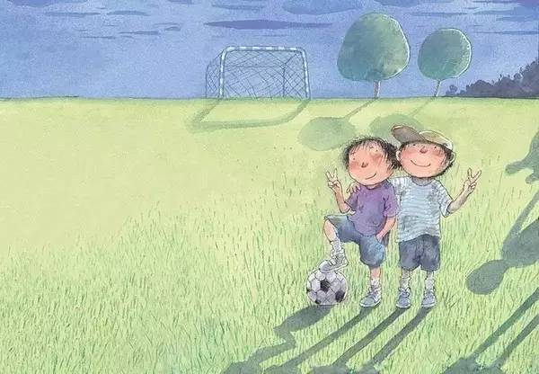
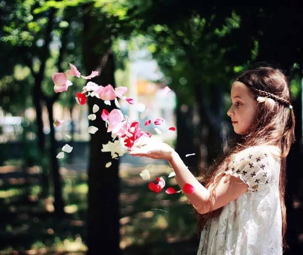
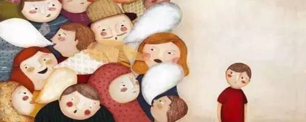

互惠动态
|
|
孩子，外面的世界不会轻易原谅你……（发人深省，深度好文）
这是一件真事儿：两名高中男生围殴老师，还对着镜头嘶吼：“我是学生，你们能把我怎样？”这就是被《未成年人保护法》喂得无知无畏的初生牛犊啊！本文是一位老师讲述的三段小故事，告诉各位家长及孩子，亲爱的孩子，老师是不能把你怎样，但外面的世界可以。

我有一个学生，喜欢钻研奥数，却走路慢慢吞吞总爱迟到，同学给他起了个雅号叫“奥特慢”。后来他被父母送到英国念高中。有一次回国，他给我们讲了个经历，却对自己感触很深。原来他假期去一家华人开的中餐厅打工，结果第一天上班就迟到了五分钟，于是被解雇了。他没有想到，第一次因为迟到所受到的严厉惩罚，竟是丢了饭碗。而最令他醍醐灌顶的，是那个华人老板的最后忠告：“小伙子，如果我不解雇你，你就不知道外面的世界有多残酷！”
在中国式教育的娇宠之下，让学生罚站也如走钢丝，迟到自然可以逍遥法外。但多年以后，因一种积习所引发的重创，这该是多么痛的领悟啊！
前几日有个新闻：一名中国留学生为了和女友约会，未经同意，私自闯入女友的寄宿家庭，被警察以“私闯民宅”的罪名逮捕了。这个热恋中的大孩子怎么都没有想到，一次浪漫的约会竟会约来荷枪实弹的警察。
校园里的温和与包容，让我们已经习惯了肆无忌惮地侵犯别人的领地，可以把同桌的课本藏起来，可以在别人的背后画乌龟。但外面世界的秩序和文化却各不相同，所以，这次你不是被警告了，你被捕了！

记得多年前，当班主任，处理过一起校园单车失窃案，案情很快就水落石出，主演就是班上的一个熊孩子。单车物归原主后我将他和他的家长叫来，准备和犯错的孩子和家长好好聊聊，他的父亲却说：“我们家不差钱，孩子就是一时贪玩，说多了会伤害他的自尊。”也许，这位天真的爸爸认为，有钱即不算窃，贪玩就不犯法。如果有一天，比尔盖茨突发奇想去难民营行窃，那就只能当做过家家吗？
其实，我只是想叮嘱一句——孩子，长大之后没有儿戏，校园之外没有温室！请记住，外面的世界不会轻易原谅你！

最后以于丹的一段名言作为结语：
“我们总希望孩子学习高精尖的东西，但损失的是家教和门风，是做人的常识与底线。有一次聚餐，朋友带着孩子，孩子爬上桌，像飞轮一样转动菜台，什么好吃就往自己嘴里抢，大人根本没办法伸筷子。我问朋友，你不管管孩子？他说，现代教育要解放天性，不能拿老一套束缚孩子。他没有想过，一个孩子最后是要成为公民的，是要进入社会的，如果漠视别人的存在，当别人的权利受到伤害的时候，他的天性能保证他一生的幸福吗？如果一个孩子没有被自己的爹妈管教，那他被社会修理的时候会付出怎样的代价？所以说，好门风能教我们做人的涵养。好门风一代一代的传承，能让我们在这个迅疾变化的时代里，找到内心不变的温暖，找到属于自己的真正的人生价值和秩序。”

关于互惠，您了解得够多么？
请外国学生来家庭照顾孩子，辅导孩子外语？
只了解这些是不够的！
获取更多信息请参考以下方式：
联系ASC：
电话：86-21-61116069(上海中心）
86-25-66065662（南京中心）
全国家庭均可申请！
手机：15601666586（可加微信）
Q Q：3259637585
微信：asc-center
邮箱：info@asc-center.com
网站：www.asc-aupair.com

感谢您对我们的关注